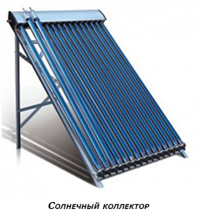
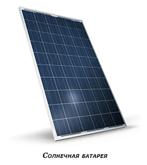

Альтернативная энергия: солнце

Солнце — источник жизни на нашей планете, а ещё — источник бесконечной энергии. Солнечные батареи и коллектора активно используются в космосе и на Земле. Так, все космические аппараты работают на солнечных батареях, а на Земле всё активнее используют солнечные коллектора. Энергия Солнца относится к разряду возобновимых и экологичных источников энергии. К сожалению, на Земле пока нет уловителей, способных полностью использовать солнечную энергию. В настоящее время в гелиотермальной энергетике используется около 20 процентов солнечной энергии, а остальные 80 просто теряются.

Для получения энергии используется электромагнитное излучение Солнца — это тепловые волны (инфракрасные лучи), световые и радиоволны. Это излучение преобразуется в тепловую или электроэнергию в специальных устройствах: батареях и коллекторах. Солнечные батареи состоят из фотоэлементов — специальных пластин, улавливающих солнечное излучение и преобразующих его в постоянный электрический ток, а коллектора собирают тепловую энергию, которая переносится видимым светом и инфракрасными лучами, и используют её для нагрева теплоносителя — обычно, воды. Таким образом, в горячем водоснабжении и отоплении используют коллектора, а для выработки электроэнергии используют солнечные батареи.

Главным плюсом использования солнечных батарей и коллекторов является использование возобновимых источников энергии и отсутствие дополнительных платежей — налога на Солнце пока нет. Однако, следует помнить, что наряду с установкой подобного оборудования необходимо использование и других источников энергии — основной минус использования солнечной энергии в её сезонности. Несмотря на то, что даже в пасмурную погоду какая-то часть тепловой и световой энергии достигает уловителей, этого объёма может не хватить на полноценный нагрев воды или для получения электроэнергии.